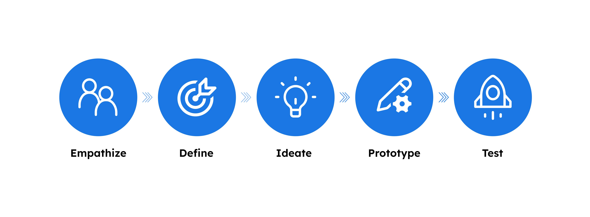
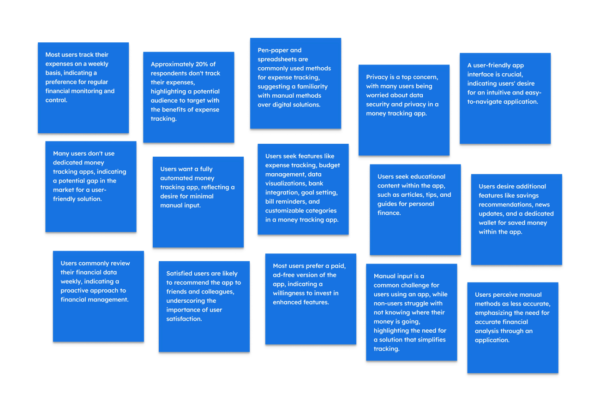
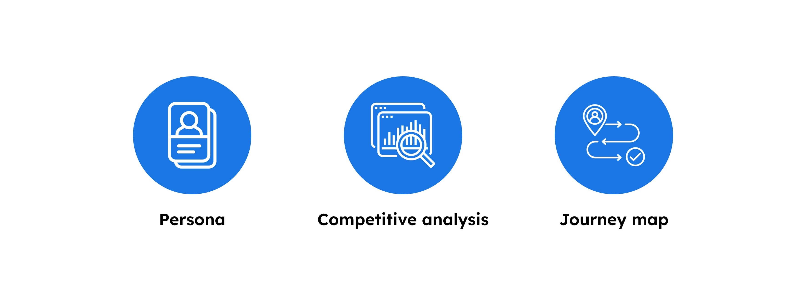
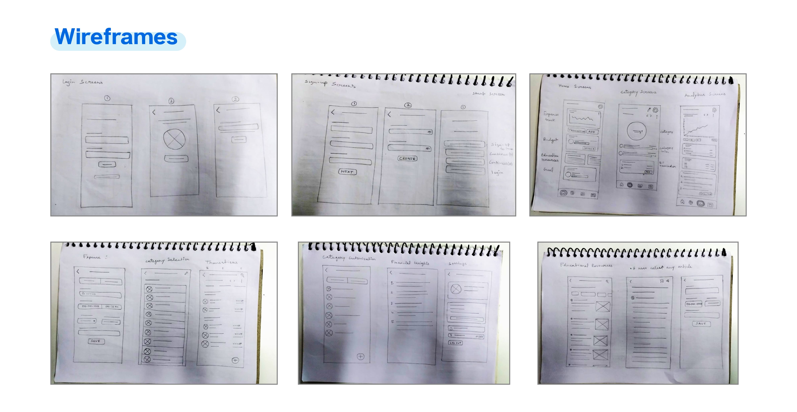
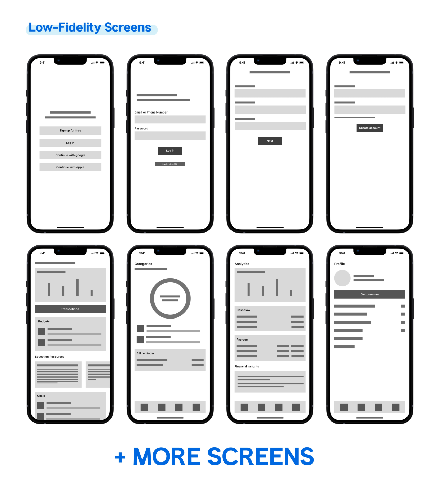
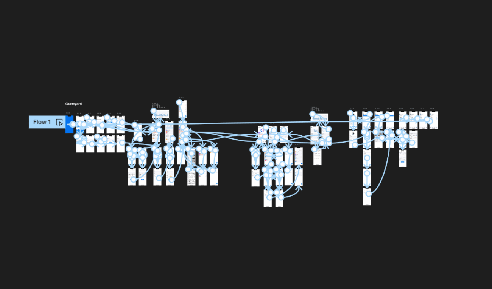
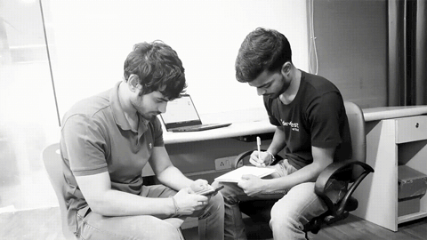

Money Tracker
The project is an innovative money tracking app designed to simplify personal finance management for users.
Roles & Resposibilities
- User Research: Competitive Analysis, User Interviews,Desk Research, User Persona, Journey Mapping
- UX Design: Information Architechture, Sketches, Low-Fidelity, Usability testing
Project Context
- July-August 2023 (2 Months)
- Solo Project
Tools Used
- Figma
- Microsoft Office
- Google Forms
Problem
In today's fast-paced world, managing personal finances has become increasingly complex. With rising costs of living and diverse financial products, many individuals find it difficult to keep track of their expenses, income, and savings goals. This can lead to financial stress and anxiety, impacting their overall well-being.
Solution
Home page
- Welcome to your financial dashboard. Check transactions, set budgets, reach goals, and learn with resources.
- Create a new account quickly and securely. Access all financial tools and start your journey to better control.
- Easily add expenses or income. Keep your records up-to-date with a simple process.
- Effortlessly create and manage budgets. See an overview of current plans for easier financial control.
- Set new financial goals and track progress. Stay inspired to achieve your milestones.
- Find financial guidance in educational resources.
Category page
- See where your money goes with a visual breakdown by category. Add custom categories for perfect financial tracking
- Never miss a payment! Set bill reminders and view upcoming and paid bills, all in one place.
Analytics page
- The analytics page screen offers a comprehensive view of your finances. Here, you'll find informative graphs, insights into your cash flow, monthly averages, and valuable financial insights. It's your one-stop destination for a deep dive into your financial picture.
Profile page
- The profile page screen is your command center for app customization. Here, you can edit your profile, upgrade to premium for enhanced features, and link your bank account for seamless automation. It's also your hub for managing notifications, data backup, app security, feedback, and easy account logout.
My approach
Research
I looked closely at existing expense tracking apps and asked people what they want in my survey. This thorough research makes sure my app solves real problems and works well for different types of users who want to manage their money better.
My target users were people between the ages of 16 and 50. This includes young adults who are starting to manage their money, as well as older professionals, families with many expenses, freelancers, people who want to save money, and those who want to be better at using technology to track their spending.
Questions I asked in survey
1. How often do you track your expenses and financial transactions?
2. What method do you currently use to track your finances?
3. Which features are essential for a money tracking app?
4. Are you concerned about data security and privacy when using a money tracking app?
5. How important is it for you to have educational resources (articles, tips, guides) about personal finance within the app?
6. How likely are you to recommend a money tracking app to a friend or colleague?
7. Do you prefer a free version of a money tracking app with ads or a paid ad-free version?
8. How often do you review your financial data or use it to make financial decisions?
Insights
From the diverse research participants, I gained valuable insights into their preferences and requirements.
To better understand how people would use the app, I created two personas representing typical users, mapped out their entire journey, and analyzed what other similar apps were doing.
Design
I started with the basics, building the information architecture, wireframes, and low-fidelity screens to get a sense of the app's direction.
 Prototype
This interactive prototype embodies the final solution for this project. Click the button below to explore its features and functionality, and immerse yourself in the world it offers.
Evaluation
To evaluate my design solution, I conducted usability testing with my target users.
Although users generally provided positive feedback, I did identify a specific point of confusion. During the payment process, some individuals attempted to select both UPI and credit card options simultaneously, indicating unclear visual cues. To address this issue, I returned to the design phase and implemented improvements to the interface.

My learning
Through this initial UX project, I gained invaluable practical experience, applying theoretical knowledge to real-world challenges. I learned to conduct user research, translate user insights into journey maps and pain points, and ideate solutions that catered to diverse user groups. The project also allowed me to hone my skills in crafting intuitive UI designs and conducting usability tests with end users, making it an incredibly rewarding experience.
Next steps
My next step is to iterate on the design of these solution screens, focusing on improving their clarity, usability, and visual appeal.